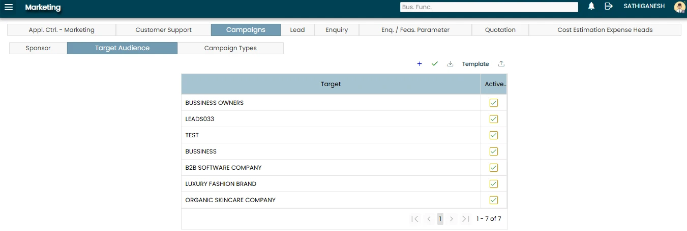

<div data-category="CRM" data-title="Target Audience" data-updated="December 01, 2025" data-contributors="RoadmapIT" data-breadcrumb="Home,CRM,Target Audience">
  <div class="page-content">
    <p>The target audience, referred to as campaign-based target individuals, can be configured in detail on the following screen. This configuration allows you to specify various attributes and criteria to precisely define the audience for your campaign.</p>
    <h5>Navigation path:</h5>
    <p class="fs-6">CRM \ Setup \ Setup- Marketing \ Campaign \ Target Audience</p>
    
    <ul style="list-style-type: none; align-content: center">
      <li class="mouse-icon">Click on <i class="bi bi-plus fs-4 mx-1 text-primary"></i> button</li>
      <li class="mouse-icon">Enter the Target Audience</li>
      <li class="mouse-icon">Select the Active flag if the Target is to be used in transactions</li>
      <li class="mouse-icon">Click <i class="bi bi-check-lg fs-4 mx-1 text-success"></i> to save</li>
      <li class="mouse-icon">Using <i class="bi bi-download fs-5 mx-1 text-muted"></i> icon to export the master data to Excel</li>
      <li class="mouse-icon">Using Template button to download the template</li>
      <li class="mouse-icon">Using <i class="bi bi-upload fs-5 mx-1 text-muted"></i> icon to upload the master data</li>
    </ul>
  </div>
</div>
